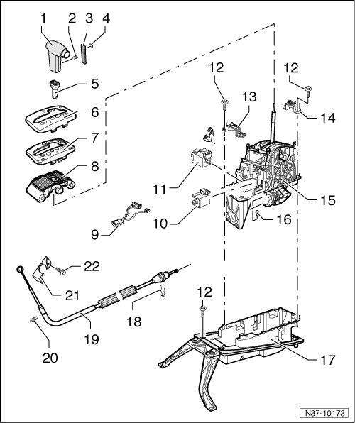

Selector Mechanism Assembly Overview
Selector Mechanism Assembly Overview

1 Selector lever handle
• Removing and installing, refer to --> [ Selector Lever Handle ] Selector Lever Handle.
2 Clip
3 Selector
4 Emblem
• Self-adhesive.
5 Sleeve
6 Cover
• With selector indicator.
• Removing and installing, refer to --> [ Shift Mechanism Cover ] Shift Mechanism Cover.
7 Printed circuit board
• With Tiptronic switch (F189).
8 Cover strips/frame
• Removing and installing, Refer to --> [ Cover Strips/Frame ] Cover Strips/Frame.
• Be careful of the Tiptronic switch (F189) signal magnet in the cover strips. Refer to --> [ Tiptronic Switch Signal Magnet ] Tiptronic Switch Signal Magnet.
9 Line
• Removing and installing, refer to --> [ Selector Lever Park Position Lock Switch ] Selector Lever Park Position Lock Switch.
10 Shift lock solenoid (N110)
• Removing and installing, refer to --> [ Shift Lock Solenoid ] Shift Lock Solenoid.
11 Selector lever park position solenoid (N380)
• Removing and installing, refer to --> [ Selector Lever Manual Release ] Selector Lever Manual Release.
12 Bolt, 20 Nm
• Quantity: 4
13 Bracket
14 Bracket
15 Selector mechanism
• With shift lock solenoid (N110) and selector lever park position solenoid (N380).
• Can be removed upward.
16 Bolt
• Adjusting, refer to --> [ Adjusting ] Procedures.
17 Mounting bracket/cover
• Can only be removed downward.
18 Retaining washer
• Always replace.
19 Selector lever cable
• Is removed together with selector mechanism --> [ (Item 15) Selector mechanism ].
• Adjusting, refer to --> [ Adjusting ] Procedures.
20 Retaining washer
• Always replace.
21 Mounting bracket
• For selector lever cable on transmission.
• When tightening, ensure the bracket does not distort.
22 Bolt
• Self locking.
• Always replace.
• Allocation.
• The threaded holes in the transmission for the bolts must always be cleaned. (e.g. with a thread tap).
Tightening Specifications
• M6 bolt = 10 Nm
• M8 bolt = 23 Nm